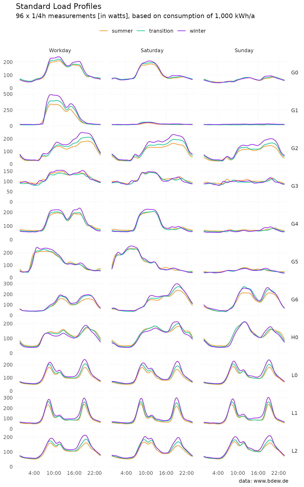
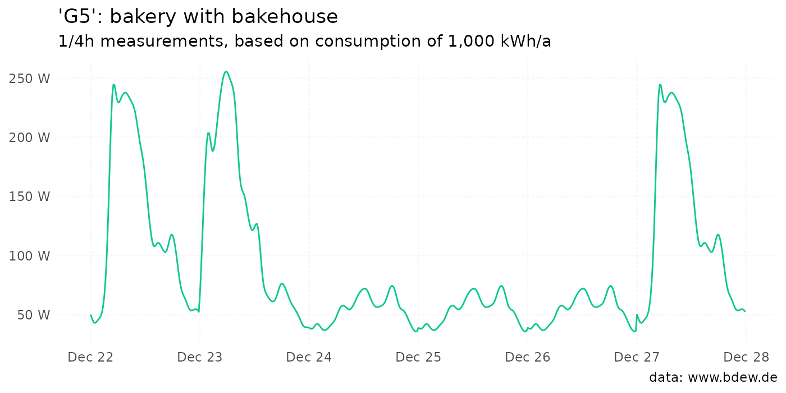
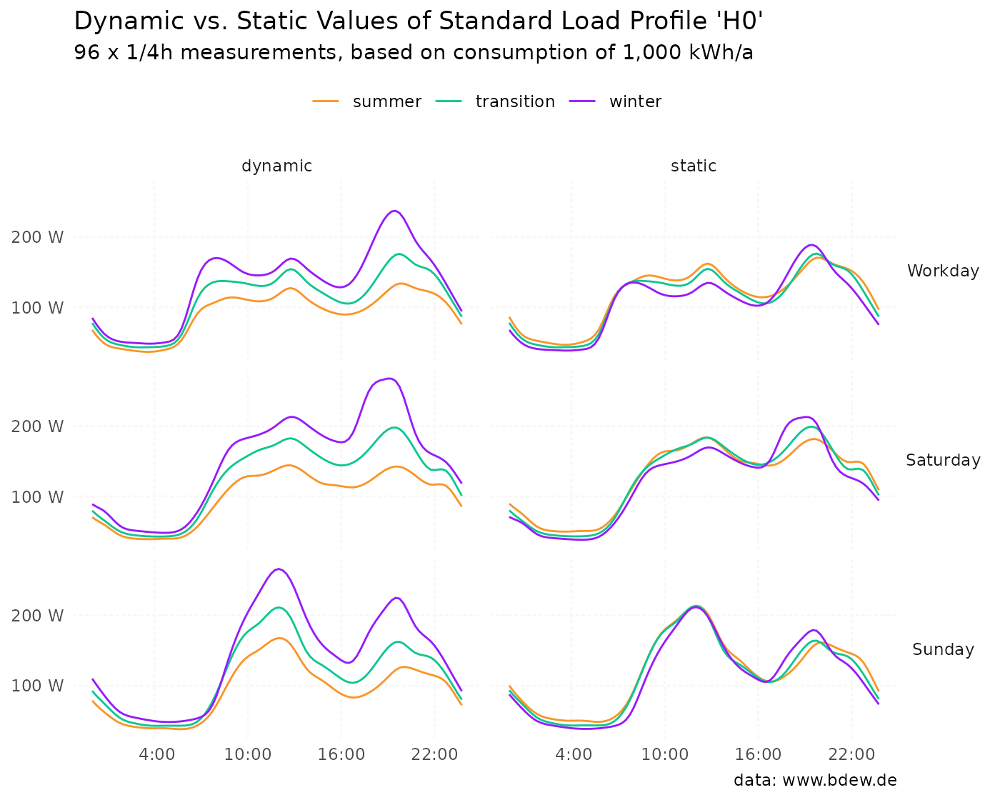

Generate a standard load profile
Source:vignettes/algorithm-step-by-step.Rmd
algorithm-step-by-step.RmdStandard load profiles are crucial for electricity providers, grid operators, and the energy industry as a whole. They aid in planning and optimizing the demand for electricity generation and distribution. Additionally, they serve as the foundation for billing and balancing electricity quantities in the energy market. For smaller consumers, the financial expense of continuous consumption measurement is often unreasonable. Energy supply companies can therefore use a standard load profile as the basis for creating a consumption forecast.
The aim of this vignette is to show how the algorithm of the
slp_generate() function works.1 The data in the
slp dataset forms the basis for all subsequent steps.
head(slp)
#> profile_id period day timestamp watts
#> 1 H0 winter saturday 00:00 70.8
#> 2 H0 winter saturday 00:15 68.2
#> 3 H0 winter saturday 00:30 65.9
#> 4 H0 winter saturday 00:45 63.3
#> 5 H0 winter saturday 01:00 59.5
#> 6 H0 winter saturday 01:15 55.0There are 96 x 1/4 hour measurements of electrical power for each
unique combination of profile_id, period and
day, which we refer to as the “standard load profile”. The
value for “00:00” indicates the average work done in the morning between
00:00 and 00:15. The data was collected and analyzed in 1999 and is
provided by German Association of Energy and Water Industries (BDEW
Bundesverband der Energie- und Wasserwirtschaft e.V.).2

Those measurements are normalized to an annual consumption of 1,000 kWh. So, if we sum up all the quarter-hour consumption values for a year, the result is (approximately) 1,000 kWh/year.
library(standardlastprofile)
H0_2024 <- slp_generate(
profile_id = "H0",
start_date = "2024-01-01",
end_date = "2024-12-31"
)
sum(H0_2024$watts)
#> [1] 4008335‘Hold on - didn’t you just say 1,000?!’, you might be thinking. Yes, you are correct; we must convert power units into energy units. The values returned are 1/4-hour measurements in watts. To convert the values to watt-hours, we must, therefore, divide them by 4. Since one watt-hour is equal to 1/1000 kilowatt-hour, we also divide by 1,000:
sum(H0_2024$watts / 4 / 1000)
#> [1] 1002.084Algorithm step by step
When you call slp_generate(), you generate (surprise!) a
standard load profile. These are the steps that are then performed:
Generate a date sequence from
start_datetoend_date.Map each day to combination of
dayandperiod.Use result from 2nd step to extract values from
slp.3Apply polynomial function to values of profile identifier
H0.Return data.
Generate a date sequence
In the initial step, a date sequence is created from
start_date to end_date based on the user
input. Here’s a simple example:
Map each day to a period and a weekday
The measured load profiles analyzed in the study showed that
electricity consumption across all groups fluctuates both over the
period of a year and over the days within a week. The
period definition is:
-
summer: May 15 to September 14 -
winter: November 1 to March 20 -
transition: March 21 to May 14, and September 15 to October 31
It was also found that there was no significant difference in consumption on weekdays from Monday to Friday for any group. For this reason, the days Monday to Friday are grouped together as ‘workdays’. December 24th and 31st are considered Saturdays too if they are not Sundays. Public holidays are regarded as Sundays.
Note: The package standardlastprofile supports only public holidays for Germany. Those were retrieved from the nager.Date API. Below are nationwide holidays for 2024:
- Jan 1: New Year’s
- Mar 29: Good Friday
- Apr 1: Easter Monday
- May 1: Labor Day
- May 9: Ascension Day
- May 20: Whit Monday
- Oct 3: German Unity Day
- Dec 25: Christmas Day
- Dec 26: Boxing Day
There is an optional argument state_code that can take
one of 16 ISO
3166-2:DE codes representing a German state. This allows you to
consider holidays that are defined at the state level too.
The result of this second step is a mapping from each date to a so-called characteristic profile day, i.e. a combination of weekday and period:
wkday_period <- standardlastprofile:::get_wkday_period(date_seq)
data.frame(input = date_seq, output = wkday_period)
#> input output
#> 1 2023-12-22 workday_winter
#> 2 2023-12-23 saturday_winter
#> 3 2023-12-24 sunday_winter
#> 4 2023-12-25 sunday_winter
#> 5 2023-12-26 sunday_winter
#> 6 2023-12-27 workday_winterAssign consumption values to each day
The third step is to assign the measurements we know from the
slp dataset to each characteristic profile day. This is the
job of the slp_generate() function:
G5 <- slp_generate(
profile_id = "G5",
start_date = "2023-12-22",
end_date = "2023-12-27"
)This function returns a data frame with 4 columns:
head(G5)
#> profile_id start_time end_time watts
#> 1 G5 2023-12-22 00:00:00 2023-12-22 00:15:00 50.1
#> 2 G5 2023-12-22 00:15:00 2023-12-22 00:30:00 47.4
#> 3 G5 2023-12-22 00:30:00 2023-12-22 00:45:00 44.9
#> 4 G5 2023-12-22 00:45:00 2023-12-22 01:00:00 43.3
#> 5 G5 2023-12-22 01:00:00 2023-12-22 01:15:00 43.0
#> 6 G5 2023-12-22 01:15:00 2023-12-22 01:30:00 43.8The data analysis revealed that load fluctuations for both commercial
and agricultural customers remain moderate throughout the year.
Specifically, for customers and customer groups labeled as
G0 to G6, and L0 to
L2,the standard load profile can be accurately derived
directly from the 3x3 characteristic profile days available in the
dataset slp.
Below is the code snippet from the README, which can be used to reproduce the plot for the G5 profile, showcasing the algorithm’s outcome:
library(ggplot2)
ggplot(G5, aes(start_time, watts)) +
geom_line(color = "#0CC792") +
scale_x_datetime(
date_breaks = "1 day",
date_labels = "%b %d") +
labs(
title = "'G5': bakery with bakehouse",
subtitle = "1/4h measurements, based on consumption of 1,000 kWh/a",
caption = "data: www.bdew.de",
x = NULL,
y = "[watts]") +
theme_minimal() +
theme(
panel.grid.minor.x = element_blank(),
panel.grid.minor.y = element_blank(),
panel.grid = element_line(
linetype = "12",
lineend = "round",
colour = "#FAF6F4"
)
) +
NULL
As you can see, the values in 2023 for December 24 (a Sunday) and December 25 and 26 (both public holidays) are identical.
Special case: H0
In contrast to most commercial and agricultural businesses, which
have a relatively even and constant electricity consumption throughout
the year, household electricity consumption decreases from winter to
summer and vice versa (at least in Germany). Because of the distinctive
annual load profile characteristics of household customers, we contend
that these customers cannot be adequately described through a static
representation using 3x3 characteristic days, as is done for commercial
or agricultural customers during the respective periods. Consequently,
the values provided in the slp dataset are not directly
comparable with the representative 1/4h values of commercial and
agricultural profiles. In the context of the slp dataset,
the term ‘static’ is somewhat inappropriate when applied to household
profiles. The values for H0 within the slp dataset are
primarily mathematical auxiliary values intended for multiplication with
a dynamization factor.
This is taken into account when you call slp_generate().
The study suggested the application of a 4th order polynomial function
to the values of standard load profile H0.
Where:
- is the resulting ‘dynamic’ value
- is the ‘static’ value
- is the day of the year as integer, starting at 1 on January 1st
The following plot shows how the electrical power develops over the
year for profile H0; for a clearer picture, the values are
aggregated at daily level:

This multiplication process aims to generate a representative, dynamic load profile. Finally, the following chart compares the dynamic values with their static counterparts.4
